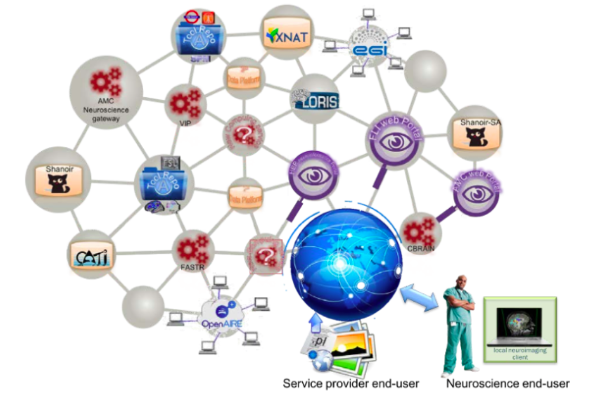
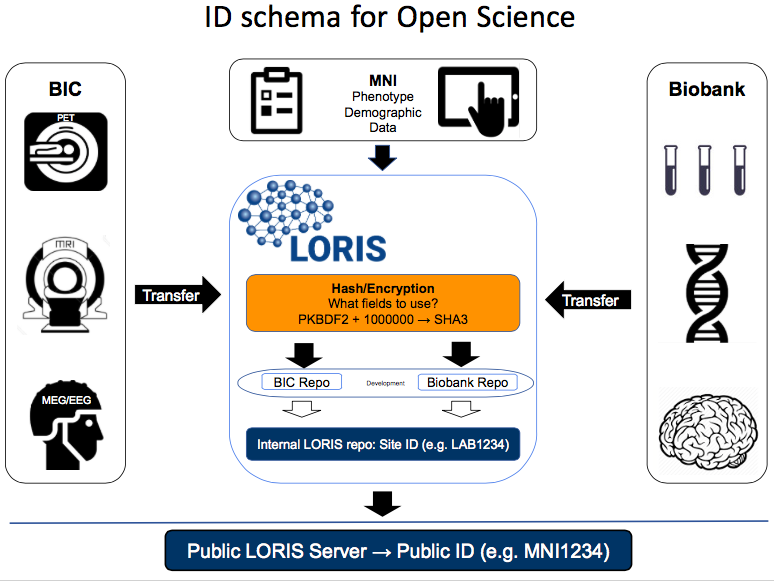

Data Sharing Initiatives
|
Dr. William Feindel May 6, 2016 |
|

|
Today's talk
Disclaimer - MNI-centric solutions
- Data Sharing preamble (hurdles, issues, solutions...)
- Examples of tools, datasets, and environments
- LORIS and CBRAIN
- Open Science at the MNI
What is Data Sharing?
Exchange of information
Datasets
Tools
Standarization
Databases
Collaborations
Conferences, hackathons
Facebook, Google, Twitter, etc.
Image source: http://blog.veritythink.com/post/87880448269/creative-data-sharing-and-open-humanitarianism
Why is Data Sharing important?
Because it's the future!
Reduce waste - governments are increasingly invested
Increased exposure of your study
More people analyzing the data
Less attrition of valuable datasets
Access to specific datasets
What are some of the hurdles?
Fear protectionism - Avatar analogy
Privacy Concerns
Privacy concerns - talk about Adrian Thorogood's talk
Technical Challenges
Interoperability between systems
Harmonization of data
Reproducibility
Best practices in Data Sharing
Committee on Best Practices in Data Analysis and Sharing (COBIDAS)

Some Data Sharing solutions?
External Initiatives
INCF, Open Science Framework, NITRC, Allen Institute, NDAR, Open fMRI, Organization Human Brain Mapping, Human Brain Project, Compute Canada, Maelstrom, UK Biobank, Edinburgh, BRAIN, ENIGMA, Enhanced Nathan Kline Institute (1000 Functional Connectomes), LONI, GAAIN, COINS, XNAT, BrainSpell, SPM, FSL, FSL, FSL, FSL,
So many initiatives!
Restricted datasets
ADNI
ICBM
NIHPD
IBIS
Gen-R
ADNI

|

|
|
Not-so-open datasets
ABIDE
ADHD 200
Human Connectome Project
NIHPD
IBIS
Atlases
Talairach, Colin 27, Russ Polldrack, Me
Bigbrain
Working group for atlas building template INCF
ANIMAL
Louis
Allen Mouse Atlases
AAL

|

|
Tools
BIDS
NIDM
ITK
Neurovault
NeuroSynth
SOLID- Tim Berners Lee
Mobile MRI
Enviromments
CIVET, Freesurfer for anatomical processing
NIAK, SPM, FSL for Functional processing
Boutiques
NiPype
Git - annex
Databases
High performance computing
LORIS globally


|

|
|

|
|
|
|
|
Open Science
|
“We’re doing a really shitty job." -- Guy Rouleau |

|
What's in it for me?
Functionality provided with the Open Science Infrastucture
Acquisition and Storage
Raw/processed data is organized and accesible
Long term storage with full backups
Quality Control mechanisms
Surveys emailed to participants
Web image visualization
Tablet Friendly
Anonimyzed automatically
Data linked across modalities
Online Data Querying
Dissemination and Analysis
Centralized data repository
Provenance capture
Cross study correlations
Easy data sharing
Consent is factored in
Completely de-identified
Access to high performance computing
Data flow in Open Science
Data Sharing Initiatives
Centralized Document Repoistory- Public Data Repositories
Collaborative Data releases
CBRAIN hooks
Ontologicial standardization (e.g. BIDS)
External Provenance (e.g. NIDM)
Interoperability with other competitors
Open Science at the MNI
What does Open Science do for you?
More citations
Access to larger datasets
Greater exposure
Validation of your data
More collaborations
Increased funding
LORIS team

Acknowledgements
Alan Evans, Alex Zijdenbos, Dario Vins, Jonathan Harlap, Matt Charlet, Andrew Corderey, Sebastian Muehlboeck, Reza Adalat, Penelope Kostopoulos, Louis Collins, Vladimir Fonov, Marc Rousseau, Mia Petkova, Rathi Gnanasekaran, David Brownlee, Tarek Sherif, Pierre Rioux, Nic Kassis, Leigh MacIntyre, Claude Lepage, Ilana Leppert, Carolina Makowski, Natasha Beck, Tristan Glatard, Bert Vincent, Lindsay Lewis, Najma Mahani, Elodie Portales-Casamar, Alden Woodward, Sylvain Milot, Jean Francois Malouin, Sylvain Baillet, Daniel Kroetz, Martin Weiss, Mathieu Desrosier, Jason Karamchandani, Amit Bar-Or, Ted Fon